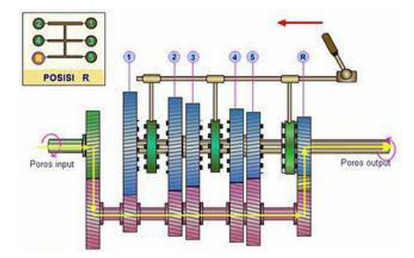

MATERI SISTEM TRANSMISI MANUAL
PENGERTIAN
- Transmisi adalah tipe transmisi manual yang menggunakan gigi yang saling bergeser untuk menghubungkan dan memutuskan tenaga dari mesin ke roda. Pada sistem ini, gigi-gigi tidak memiliki mekanisme penghubung otomatis, sehingga pengemudi harus secara manual memindahkan gigi dengan menggunakan tuas transmisi.

PRINSIP KERJA SISTEM TRANSMISI MANUAL
- Transmisi manual menganut prinsip momen yang sederhana. Transmisi manual sendiri bekerja berdasarkan rasio roda gigi. dengan melakukan perubahan pada rasio roda gigi pada sistem transmisi, akan membuat mobil mengalami perbedaan output kecepatan. Contohnya saat mobil melewati jalan yang menanjak, maka diperlukan torsi yang besar untuk menahan beban yang ada. Torsi didapatkan dengan cara mereduksi kecepatan putar melalui tranmsimi sehingga didapatkan torsi yang lebih besar pada daya yang sama. Sebaliknya jika dibutuhkan torsi yang rendah maka kecepatanya akan ditingkatkan.
JENIS-JENIS SISTEM TRANSMISI MANUAL
- Sliding-Mesh Unit
- Synchronmesh
- Constant-Mesh
PENGERTIAN SLIDING MESH
- Sliding mesh merupakan jenis awal transmisi manual dan paling mudah untuk dimengerti. Transmisi jenis ini, karena memang memiliki banyak kekurangan dalam cara kerjanya. Diantaranya adalah karena mengeluarkan suara yang kasar saat perpindahan gigi, perpindahan gigi membutuhkan waktu yang cukup lama, hanya dapat menggunakan salah satu dari roda gigi.
- berikut adalah gambar skema aliran tenaga transmisi sliding mesh


Posisi 1
Pada gigi pertama, kotak roda gigi menyediakan torsi maksimum pada kecepatan rendah. Gigi terkecil pada poros utama terhubung dengan gigi terbesar pada poros utama, sehingga menyalurkan torsi tinggi.

Posisi 2
Pada gigi kedua,roda gigi menyediakan torsi rendah dan kecepatan tinggi jika dibandingkan dengan gigi pertama.

Posisi 3
Pada gigi ketiga, gearbox memberikan torsi rendah dan kecepatan tinggi jika dibandingkan dengan gigi kedua.
PENGERTIAN SYNCHRONMESH
- Synchromesh adalah sistem transmisi manual yang dilengkapi dengan unit sinkroniser untuk menyamakan kecepatan gigi yang akan dipasangkan, sehingga perpindahan gigi menjadi lebih halus dan tidak menimbulkan kerusakan pada gigi.
- Cara kerja Synchromesh
- Roda gigi sinkromesh terhubung dengan poros input, kedua roda gigi tingkat bebas berputar pada poros output. kopling terhubung dan bergerak sepanjang alur roda gigi sinkromesh.
- Kopling geser didorong ke kanan, cincin sinkromesh ikut terdorong dan terhubung dengan konis pengereman roda gigi tingkat terjadi pengereman. Putaran unit sinkromeh sama dengan putaran roda gigi.
- Kopling geser digerakan lebih jauh mengakibatkan roda gigi sinkromeh terhubung dengan roda gigi tingkat, kemudia roda gigi tingkat terhubung dengan poros output


PENGERTIAN CONSTANT-MESH
- Transmisi tipe constant mesh adalah jenis transmisi manual yang cara kerja dalam pemindahan giginya memerlukan bantuan kopling geser agar terjadi perpindahan tenaga dari poros input ke poros out put. Transmisi jenis constant mesh antara roda gigi input dan out put nya selalu berkaitan, tetapi roda gigi output tidak satu poros dengan poros output transmisi. Tenaga akan diteruskan ke poros output melalui mekanisme kopling geser. Transmisi jenis ini memungkinkan untuk menggunakan roda gigi lebih dari satu jenis

CARA KERJA SISTEM TRANSMISI MANUAL
- Posisi Netral
- Jika tuas persneling ditarik ke belakang, maka gear selection fork akan menghubungkan unit synchromesh untuk berkaitan dengan gigi 1, posisi gigi 1 akan menghasilkan putaran yang lambat tetapi momen pada poros out put besar
- Aliran Tenaga Poros input→gear pembanding utama (primer)→gear pembanding 1→gear 1→unit synchromesh→poros output
- Posisi Gigi 1
- Posisi Gigi 2
- Posisi Gigi Mundur 


Tuas didorong ke depan menggerakan gear selector fork sehingga unit synchromesh berhubungan dengan gigi 2. Posisi gigi 2 putaran poros output lebih cepat dibanding pada posisi 1
Aliran Tenaga Poros input→gear main scraft→poros gear counter→gear pembanding 2→unit synchromesh→poros output
Tuas didorong ke depan menggerakan gear selector fork sehingga unit synchromesh berhubungan dengan gigi 2. Posisi gigi 2 putaran poros output lebih cepat dibanding pada posisi 1
Aliran Tenaga Poros input→gear main scraft→poros gear counter→gear pembanding 2→unit synchromesh→poros output
Tuas persneling didorong ke depan menggerakkan gear selection fork sehingga unit synchromesh berhubungan dengan roda gigi R. antara roda gigi R dan rodagigi pembanding dipasangkan roda gigi idle (idle gear) yang menyebabkan putaran poros input berlawanan arah dengan poros out put
Aliran Tenaga Poros input→gear main scraft→poros gear counter→gear pembanding R→idle gear→unit synchromesh→poros output